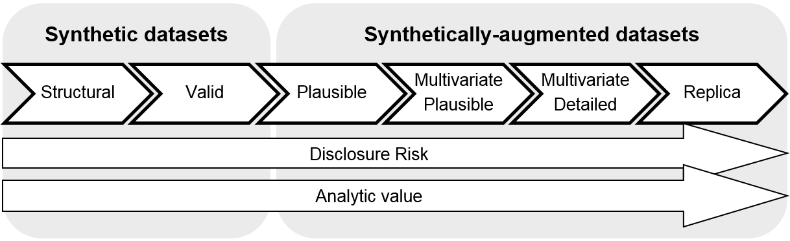

Data Generator
Healthcare data is interoperable, but not composable - every deployment site will have different ways of configuring data and terminology. This matters when you develop applications that need to integrate into these systems, especially when you need to reliably extract data for your model to consume.
The aim of the data generator is not to generate realistic data suitable for use cases such as patient population studies, but rather to generate data that is structurally compliant with what is expected of EHR configurations, and to be able to test and handle variations in this.
For this reason the data generator is opinionated by specific workflows and use cases.
Note
We're aware we may not cover everyone's use cases, so if you have strong opinions about this, please reach out!
On the synthetic data spectrum defined by this UK ONS methodology working paper, HealthChain generates level 1: synthetic structural data.

CDS Data Generator
The .generate() method will return a CdsFhirData model with the prefetch field populated with a Bundle of generated structural synthetic FHIR data.
For each workflow, a pre-configured list of FHIR resources is randomly generated and placed in the prefetch field of a CDSRequest.
Current implemented workflows:
| Workflow | Implementation Completeness | Generated Synthetic Resources |
|---|---|---|
| patient-view | Patient, Encounter (Future: MedicationStatement, AllergyIntolerance) |
|
| encounter-discharge | Patient, Encounter, Procedure, MedicationRequest, Optional DocumentReference |
|
| order-sign | Partial | Future: MedicationRequest, ProcedureRequest, ServiceRequest |
| order-select | Partial | Future: MedicationRequest, ProcedureRequest, ServiceRequest |
For more information on CDS workflows, see the CDS Use Case documentation.
You can use the data generator within a client function or on its own.
import healthchain as hc
from healthchain.use_cases import ClinicalDecisionSupport
from healthchain.models import CdsFhirData
from healthchain.data_generators import CdsDataGenerator
@hc.sandbox
class MyCoolSandbox(ClinicalDecisionSupport):
def __init__(self) -> None:
self.data_generator = CdsDataGenerator()
@hc.ehr(workflow="patient-view")
def load_data_in_client(self) -> CdsFhirData:
data = self.data_generator.generate()
return data
@hc.api
def my_server(self, request) -> None:
pass
from healthchain.data_generators import CdsDataGenerator
from healthchain.workflow import Workflow
# Initialise data generator
data_generator = CdsDataGenerator()
# Generate FHIR resources for use case workflow
data_generator.set_workflow(Workflow.encounter_discharge)
data = data_generator.generate()
print(data.model_dump())
# {
# "prefetch": {
# "entry": [
# {
# "resource": ...
# }
# ]
# }
#}
Other synthetic data sources
If you are looking for realistic datasets, you are also free to load your own data in a sandbox run! Check out MIMIC for comprehensive continuity of care records and free-text data, or Synthea for synthetically generated FHIR resources. Both are open-source, although you will need to complete PhysioNet Credentialing to access MIMIC.
Loading free-text
You can specify the free_text_csv field of the .generate() method to load in free-text sources into the data generator, e.g. discharge summaries. This will wrap the text into a FHIR DocumentReference resource (N.B. currently we place the text directly in the resource attachment, although it is technically supposed to be base64 encoded).
A random text document from the csv file will be picked for each generation.